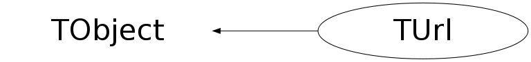

Function Members (Methods)
public:
| TUrl() | |
| TUrl(const TUrl& url) | |
| TUrl(const char* url, Bool_t defaultIsFile = kFALSE) | |
| virtual | ~TUrl() |
| void | TObject::AbstractMethod(const char* method) const |
| virtual void | TObject::AppendPad(Option_t* option = "") |
| virtual void | TObject::Browse(TBrowser* b) |
| static TClass* | Class() |
| virtual const char* | TObject::ClassName() const |
| void | CleanRelativePath() |
| virtual void | TObject::Clear(Option_t* = "") |
| virtual TObject* | TObject::Clone(const char* newname = "") const |
| virtual Int_t | Compare(const TObject* obj) const |
| virtual void | TObject::Copy(TObject& object) const |
| virtual void | TObject::Delete(Option_t* option = "")MENU |
| virtual Int_t | TObject::DistancetoPrimitive(Int_t px, Int_t py) |
| virtual void | TObject::Draw(Option_t* option = "") |
| virtual void | TObject::DrawClass() constMENU |
| virtual TObject* | TObject::DrawClone(Option_t* option = "") constMENU |
| virtual void | TObject::Dump() constMENU |
| virtual void | TObject::Error(const char* method, const char* msgfmt) const |
| virtual void | TObject::Execute(const char* method, const char* params, Int_t* error = 0) |
| virtual void | TObject::Execute(TMethod* method, TObjArray* params, Int_t* error = 0) |
| virtual void | TObject::ExecuteEvent(Int_t event, Int_t px, Int_t py) |
| virtual void | TObject::Fatal(const char* method, const char* msgfmt) const |
| virtual TObject* | TObject::FindObject(const char* name) const |
| virtual TObject* | TObject::FindObject(const TObject* obj) const |
| const char* | GetAnchor() const |
| virtual Option_t* | TObject::GetDrawOption() const |
| static Long_t | TObject::GetDtorOnly() |
| const char* | GetFile() const |
| const char* | GetFileAndOptions() const |
| const char* | GetHost() const |
| const char* | GetHostFQDN() const |
| virtual const char* | TObject::GetIconName() const |
| Int_t | GetIntValueFromOptions(const char* key) const |
| virtual const char* | TObject::GetName() const |
| virtual char* | TObject::GetObjectInfo(Int_t px, Int_t py) const |
| static Bool_t | TObject::GetObjectStat() |
| virtual Option_t* | TObject::GetOption() const |
| const char* | GetOptions() const |
| const char* | GetPasswd() const |
| Int_t | GetPort() const |
| const char* | GetProtocol() const |
| static TObjArray* | GetSpecialProtocols() |
| virtual const char* | TObject::GetTitle() const |
| virtual UInt_t | TObject::GetUniqueID() const |
| const char* | GetUrl(Bool_t withDeflt = kFALSE) const |
| const char* | GetUser() const |
| const char* | GetValueFromOptions(const char* key) const |
| virtual Bool_t | TObject::HandleTimer(TTimer* timer) |
| virtual ULong_t | TObject::Hash() const |
| virtual void | TObject::Info(const char* method, const char* msgfmt) const |
| virtual Bool_t | TObject::InheritsFrom(const char* classname) const |
| virtual Bool_t | TObject::InheritsFrom(const TClass* cl) const |
| virtual void | TObject::Inspect() constMENU |
| void | TObject::InvertBit(UInt_t f) |
| virtual TClass* | IsA() const |
| virtual Bool_t | TObject::IsEqual(const TObject* obj) const |
| virtual Bool_t | TObject::IsFolder() const |
| Bool_t | TObject::IsOnHeap() const |
| virtual Bool_t | IsSortable() const |
| Bool_t | IsValid() const |
| Bool_t | TObject::IsZombie() const |
| virtual void | TObject::ls(Option_t* option = "") const |
| void | TObject::MayNotUse(const char* method) const |
| virtual Bool_t | TObject::Notify() |
| void | TObject::Obsolete(const char* method, const char* asOfVers, const char* removedFromVers) const |
| static void | TObject::operator delete(void* ptr) |
| static void | TObject::operator delete(void* ptr, void* vp) |
| static void | TObject::operator delete[](void* ptr) |
| static void | TObject::operator delete[](void* ptr, void* vp) |
| void* | TObject::operator new(size_t sz) |
| void* | TObject::operator new(size_t sz, void* vp) |
| void* | TObject::operator new[](size_t sz) |
| void* | TObject::operator new[](size_t sz, void* vp) |
| TUrl& | operator=(const TUrl& rhs) |
| virtual void | TObject::Paint(Option_t* option = "") |
| void | ParseOptions() const |
| virtual void | TObject::Pop() |
| virtual void | Print(Option_t* option = "") const |
| virtual Int_t | TObject::Read(const char* name) |
| virtual void | TObject::RecursiveRemove(TObject* obj) |
| void | TObject::ResetBit(UInt_t f) |
| virtual void | TObject::SaveAs(const char* filename = "", Option_t* option = "") constMENU |
| virtual void | TObject::SavePrimitive(ostream& out, Option_t* option = "") |
| void | SetAnchor(const char* anchor) |
| void | TObject::SetBit(UInt_t f) |
| void | TObject::SetBit(UInt_t f, Bool_t set) |
| virtual void | TObject::SetDrawOption(Option_t* option = "")MENU |
| static void | TObject::SetDtorOnly(void* obj) |
| void | SetFile(const char* file) |
| void | SetHost(const char* host) |
| static void | TObject::SetObjectStat(Bool_t stat) |
| void | SetOptions(const char* opt) |
| void | SetPasswd(const char* pw) |
| void | SetPort(Int_t port) |
| void | SetProtocol(const char* proto, Bool_t setDefaultPort = kFALSE) |
| virtual void | TObject::SetUniqueID(UInt_t uid) |
| void | SetUrl(const char* url, Bool_t defaultIsFile = kFALSE) |
| void | SetUser(const char* user) |
| virtual void | ShowMembers(TMemberInspector& insp) |
| virtual void | Streamer(TBuffer& b) |
| void | StreamerNVirtual(TBuffer& b) |
| virtual void | TObject::SysError(const char* method, const char* msgfmt) const |
| Bool_t | TObject::TestBit(UInt_t f) const |
| Int_t | TObject::TestBits(UInt_t f) const |
| virtual void | TObject::UseCurrentStyle() |
| virtual void | TObject::Warning(const char* method, const char* msgfmt) const |
| virtual Int_t | TObject::Write(const char* name = 0, Int_t option = 0, Int_t bufsize = 0) |
| virtual Int_t | TObject::Write(const char* name = 0, Int_t option = 0, Int_t bufsize = 0) const |
protected:
| virtual void | TObject::DoError(int level, const char* location, const char* fmt, va_list va) const |
| void | TObject::MakeZombie() |
Data Members
public:
| enum EStatusBits { | kUrlWithDefaultPort | |
| kUrlHasDefaultPort | ||
| }; | ||
| enum TObject::EStatusBits { | kCanDelete | |
| kMustCleanup | ||
| kObjInCanvas | ||
| kIsReferenced | ||
| kHasUUID | ||
| kCannotPick | ||
| kNoContextMenu | ||
| kInvalidObject | ||
| }; | ||
| enum TObject::[unnamed] { | kIsOnHeap | |
| kNotDeleted | ||
| kZombie | ||
| kBitMask | ||
| kSingleKey | ||
| kOverwrite | ||
| kWriteDelete | ||
| }; |
private:
| TString | fAnchor | anchor in object (after #) |
| TString | fFile | remote object |
| TString | fFileOA | !file with option and anchor |
| TString | fHost | remote host |
| TString | fHostFQ | !fully qualified host name |
| TString | fOptions | options/search (after ?) |
| TMap* | fOptionsMap | !map containing options key/value pairs |
| TString | fPasswd | password |
| Int_t | fPort | port through which to contact remote server |
| TString | fProtocol | protocol: http, ftp, news, root, proof, ... |
| TString | fUrl | full URL |
| TString | fUser | user name |
| static THashList* | fgHostFQDNs | list of resolved host FQDNs |
| static TObjArray* | fgSpecialProtocols | list of special protocols |
Class Charts
{kind=link}
{kind=link}
{kind=link}
{kind=link}

Function documentation
TUrl(const char* url, Bool_t defaultIsFile = kFALSE)
Parse url character string and split in its different subcomponents. Use IsValid() to check if URL is legal. url: [proto://][user[:passwd]@]host[:port]/file.ext[?options][#anchor] Known protocols: http, root, proof, ftp, news and any special protocols defined in the rootrc Url.Special key. The default protocol is "http", unless defaultIsFile is true in which case the url is assumed to be of type "file". If a passwd contains a @ it must be escaped by a \\, e.g. "pip@" becomes "pip\\@". Default ports: http=80, root=1094, proof=1093, ftp=20, news=119. Port #1093 has been assigned by IANA (www.iana.org) to proofd. Port #1094 has been assigned by IANA (www.iana.org) to rootd.
void SetUrl(const char* url, Bool_t defaultIsFile = kFALSE)
Parse url character string and split in its different subcomponents. Use IsValid() to check if URL is legal. url: [proto://][user[:passwd]@]host[:port]/file.ext[?options][#anchor] Known protocols: http, root, proof, ftp, news and any special protocols defined in the rootrc Url.Special key. The default protocol is "http", unless defaultIsFile is true in which case the url is assumed to be of type "file". If a passwd contains a @ it must be escaped by a \\, e.g. "pip@" becomes "pip\\@". Default ports: http=80, root=1094, proof=1093, ftp=20, news=119. Port #1093 has been assigned by IANA (www.iana.org) to proofd. Port #1094 has been assigned by IANA (www.iana.org) to rootd.
void FindFile(char* u, Bool_t stripDoubleSlash = kTRUE)
Find file and optionally anchor and options.
const char * GetUrl(Bool_t withDeflt = kFALSE) const
Return full URL. If withDflt is kTRUE, explicitly add the port even if it matches the default value for the URL protocol.
const char * GetHostFQDN() const
Return fully qualified domain name of url host. If host cannot be resolved or not valid return the host name as originally specified.
const char * GetFileAndOptions() const
Return the file and its options (the string specified behind the ?). Convenience function useful when the option is used to pass authetication/access information for the specified file.
void SetProtocol(const char* proto, Bool_t setDefaultPort = kFALSE)
Set protocol and, optionally, change the port accordingly.
TObjArray * GetSpecialProtocols()
Read the list of special protocols from the rootrc files. These protocols will be parsed in a protocol and a file part, no host or other info will be determined. This is typically used for legacy file descriptions like: rfio:host:/path/file.root.
const char * GetValueFromOptions(const char* key) const
Return a value for a given key from the URL options. Returns 0 in case key is not found.
Int_t GetIntValueFromOptions(const char* key) const
Return a value for a given key from the URL options as an Int_t, a missing key returns -1.